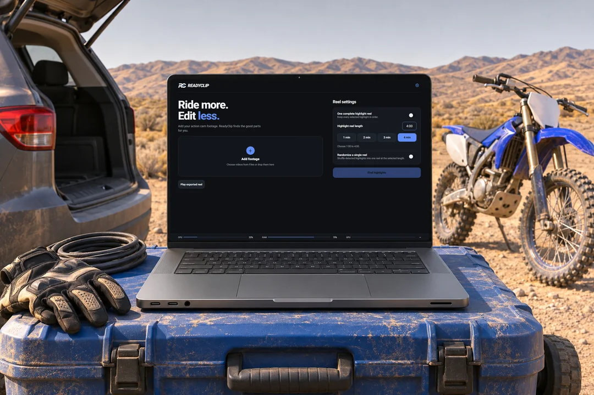

Drop the footage.
Add a file or a folder from your camera card. Your originals stay on your drive.
Action-camera highlights
Turn the whole ride into the moments you want to watch again. ReadyClip finds the hits in your camera footage. You decide what makes the reel.
Download for Windows

How it works

Add a file or a folder from your camera card. Your originals stay on your drive.

ReadyClip listens for changes in the ride audio. Review its picks and dial in how much to keep before and after each moment.

Export one MP4 or split the ride into shorter parts. Keep a lossless master when you want the original detail.
App skins
Four finishes from the desktop app. Pick one to see the actual interface.

Windows desktop
Get ReadyClip for Windows x64. Unzip the download and open App/ReadyClip.exe.
Download for WindowsWindows 0.5.4 beta.
In PowerShell, run Get-FileHash .\ReadyClip-0.5.4-beta-Windows-x64.zip and compare its SHA-256 value.
d828d33d39bd44922dc4e759df3dc7301f7eda0c6392c5cedea19a26670f3ba9